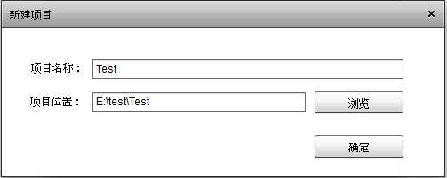
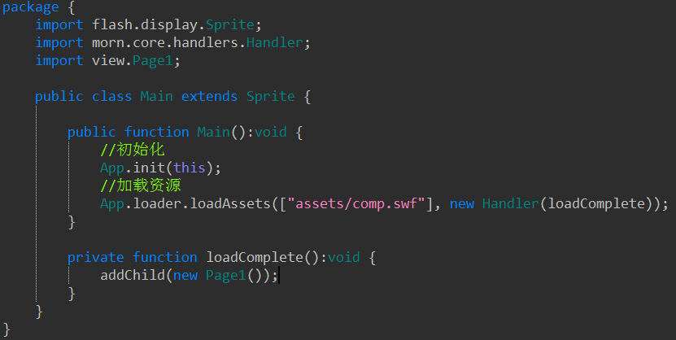
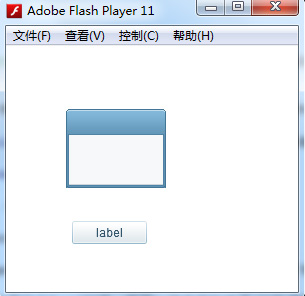

A.引用项目库并初始化
1.新建一个空项目，我这里用flashdevlop，用flash builder类同（注意编译目录改为bin，默认为bin-debug）

2.拷贝组件库(MornUILib内)到项目内，下图morn是ui库(也可以通过引用类库的方式调用)

3.初始化组件，编辑Main.as，调用初始化函数

到此就完成类库的调用过程
B.使用编辑器制作界面
1.打开编辑器Builder/Main.exe
2.新建项目到as3项目目录(快捷键Ctrl+O)

3.点击“添加资源”添加组件资源(在morn里，图片即组件，编辑器根据资源前缀识别成对应的组件，命名规则详见Builder下的MornUIConfig.xml)

4.copy资源到打开的assets目录(除了矢量图(vector.swf)，图片要以文件夹的方式存放，编辑器会根据文件夹打包为对应的swf)

5.编辑器按快捷键F5刷新，就能看到资源树了

6.在编辑器内，使用快捷键Ctrl+N新建一个页面，起名叫Page1

7.拖拽左面组件到页面Page1内，我放置了一个button，并且定义为btn

8.Ctrl+S保存，F12发布代码，Page1对应生成Page1UI.as,默认发布到game/ui下，所用资源自动打包为swf，默认发布到bin/assets下（路径可配置，快捷键F9）

9.现在要使用这个UI，那么我们新建一个类，继承至这个Page1UI类，就可以随意控制它了(UI和逻辑分离)

10.在Main.as里面，加载资源，并实例化这个Page1页面

11.编译项目，至此就能正确的运行了
